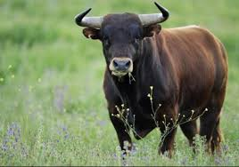
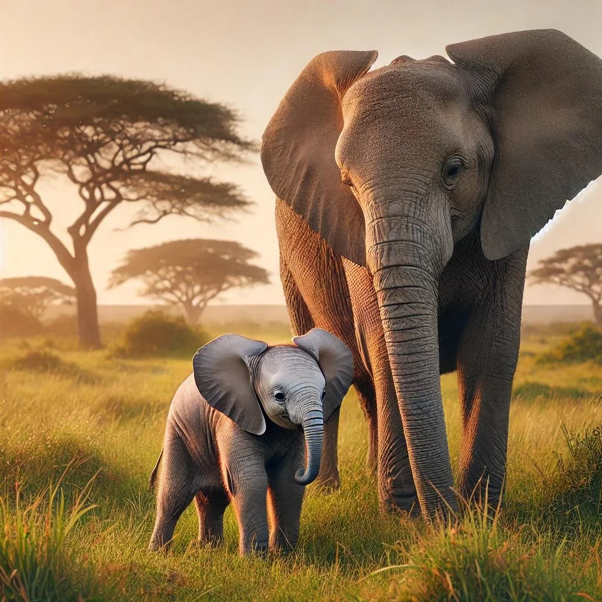
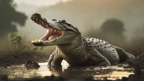

A sheep
Sheep (pl.: sheep) or domestic sheep (Ovis aries) are a domesticated, ruminant mammal typically kept as livestock. Although the term sheep can apply to other species in the genus Ovis, in everyday usage it almost always refers to domesticated sheep

Bull
A bull is an intact (i.e., not castrated) adult male of the species Bos taurus (cattle). More muscular and aggressive than the females of the same species (i.e. cows proper), bulls have long been an important symbol in many religions, including for sacrifices.

Elephants
Elephants are the largest living land animals. Three living species are currently recognised: the African bush elephant (Loxodonta africana), the African forest elephant (L. cyclotis), and the Asian elephant (Elephas maximus).

Crocodile